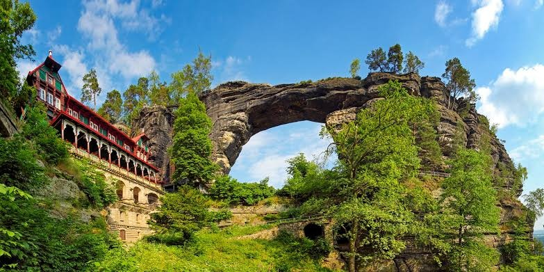
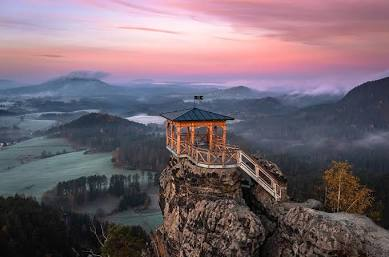
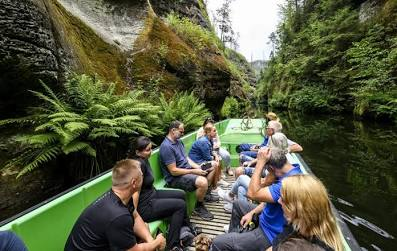
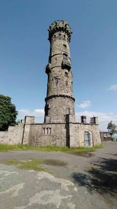

79 km²
Objevení krás České Švýcarsko
Fascinující pískovcová skalní města, hluboké rokle a dechberoucí vyhlídky v srdci národního parku.
Prozkoumat lokace2000
Rok založení
726 m
Děčínský Sněžník
1100+
Chráněných druhů
O Národním Parku
Přírodní skvost na hranicích s Německem formovaný miliony let geologického vývoje.
Pískovcová skalní města a hluboká údolí
Národní park České Švýcarsko byl vyhlášen 1. ledna 2000 a představuje unikátní území tvořené kvádrovými pískovci. Krajinný ráz je charakterizován fascinujícími skalními věžemi, branami a roklemi.
Rozmanitá fauna a flóra
Díky klimatu a členitému reliéfu se zde setkáváme s fenoménem klimatické inverze. V chladných roklích se daří horským druhům, zatímco na skalních vrcholech žijí teplomilná společenstva.
Ikonická Místa
Vyberte si cíl vaší další výpravy v parku.

Pravčická brána
Největší přirozená skalní brána v Evropě. Ikonický symbol celého národního parku s historickým zámečkem Sokolí hnízdo.

Mariina vyhlídka
Skalní vrch u Jetřichovic s ikonickým dřevěným altánem nabízejícím kruhový výhled na celek Jetřichovických stěn.

Edmundova soutěska
Hluboký skalní kaňon řeky Kamenice přístupný výhradně romantickou plavbou na lodičkách s převozníkem.

Děčínský Sněžník
Nejvyšší stolová hora v ČR (726 m n. m.) s nejstarší kamennou rozhlednou nabízející úchvatné výhledy do Česka i Německa.
Rezervace a Dotazy
Spočítejte si cenu výletu s průvodcem nebo nám pošlete dotaz.